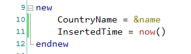
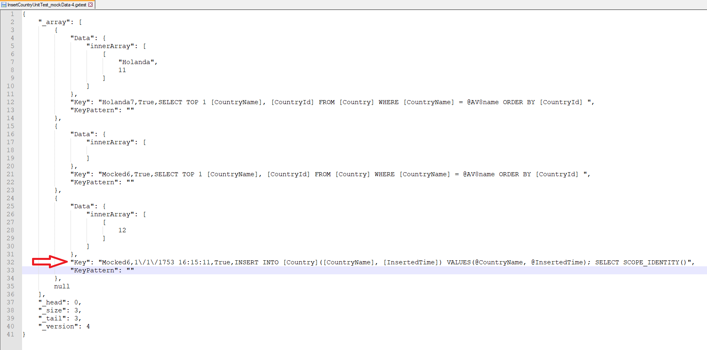
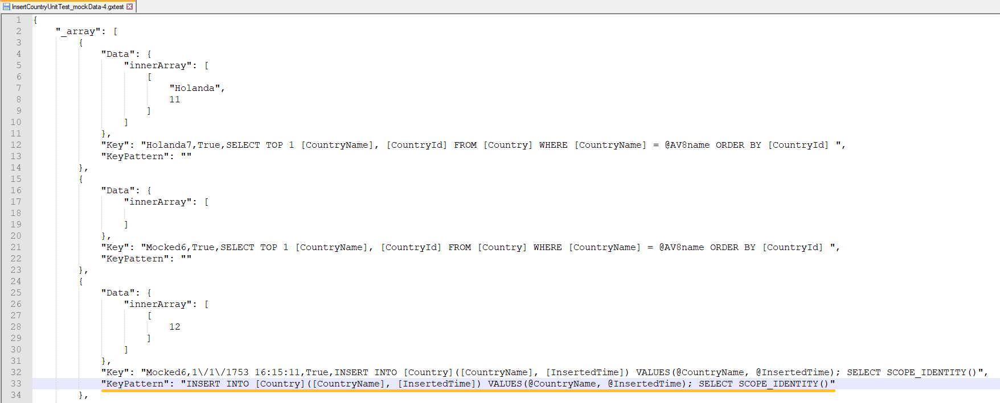

There are two scenarios at least in which you would want to change the recorded data.
1. Generated sentences are dynamic
If the sentences your object under test executes depend on dynamic data, you will have a mismatch when the test runs again.
For example, if in your object/test you have the following:

Every time the test is executed the insertion will have a different time, rendering your mock data file not helpful.
When this happens, you can open the mock file linked to the test, right-click it and select the option Edit.
Once opened (select any app that allows you to edit a text file), search for the Insert query that's causing the problem, and edit it so it fits what you need.

In this example we removed the first part of the key and set it to the KeyPattern field, to be matched by a regular expression instead of the exact sentence in runtime.
Alternatively, you could have written the following:
"KeyPattern": "Mocked6,{{.+}},True,INSERT INTO [Country]([CountryName], [InsertedTime]) VALUES(@CountryName, @InsertedTime); SELECT SCOPE_IDENTITY()"
This way you are expecting that the country must be named "Mocked"
2. Modify the results returned by the queries recorded
In the example shown in the screenshots before, the first recorded data returns a country called Holanda with Id 11. You could modify those values and set whichever value you want, removing or adding data in case you need it. Be careful to respect the data types and JSON structure.
{
"Data": {
"innerArray": [
[
"Mocked value",
11
]
]
},
"Key": "Holanda7,True,SELECT TOP 1 [CountryName], [CountryId] FROM [Country] WHERE [CountryName] = @AV8name ORDER BY [CountryId] ",
"KeyPattern": ""
}
Note that you could also use a KeyPattern to expect any Select from the table Country for example setting:
"KeyPattern": "SELECT {{.*}} FROM [Country] WHERE {{.*}}"
Note 1: the regular expression depends on the generator of the environment you are using, for .Net you should check the Regex class and for Java the Pattern class. Take into account that there are characters that must be escaped in order to not affect the mock data read.
For example for a pattern to match a date time with the format dd/mm/yyyy HH:MM:SS you could have the following regular expression:
\d{1,2}/\d{1,2}/\d{2,4} \d{1,2}:\d{1,2}:\d{1,2}
But the backslash must be escaped when writing it to the mock data file as follows:
{{\\d{1,2}/\\d{1,2}/\\d{2,4} \\d{1,2}:\\d{1,2}:\\d{1,2}}}
Note 2: in Java environments, mocking data files are a little more verbose, but the way of modifying the data is similar to the example presented before for .Net environments.
| Backlinks |
| Database Mocking |